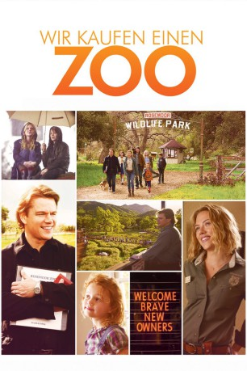
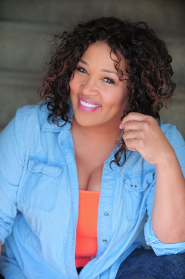
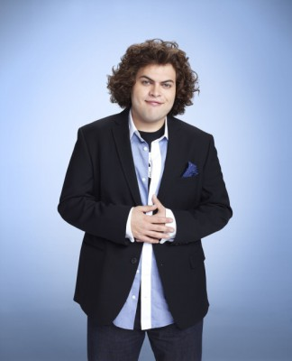

#2918 Wir kaufen einen Zoo
Alternativ: We Bought a Zoo
 
 IMDB-Wertung: 7.1 / 10
IMDB-Wertung: 7.1 / 10  Metascore: 58
Metascore: 58 
Auf der Suche nach einem neuen Heim für sich und seine Kinder kauft Benjamin Mee kurz entschlossen einen baufälligen Zoo. Dafür setzt er alle seine Ersparnisse ein und sieht sich mit der Tatsache konfrontiert, dass er keine Ahnung davon hat, was es bedeutet, einen Zoo zu führen. Seine beiden Kinder sind von seinem Plan jedoch begeistert. Für sie ist das Leben mit dem eigenen Zoo ein großes Abenteuer. Doch Benjamins Bruder Duncan glaubt nicht daran, dass das Projekt funktionieren wird. Unterstützung bekommt Benjamin von der jungen Tierpflegerin Kelly, die ihm den Umgang mit den Tieren von Grund auf beibringen muss. Doch damit hat die Arbeit für Benjamin erst begonnen…
Jahr: 2011
Dauer: 123 Minuten
FSK: 0
Land: Studio: 20th Century Fox of GermanyTonspuren: DTS - ,
Untertitel: Deutsch,
Auflösung: 1080p (1920x1040) Größe: 10004 MB
Genre: Komödie, Familie
Regisseur:  Cameron Crowe
Cameron Crowe
Drehbuch: Aline Brosh McKenna, Cameron Crowe, Benjamin Mee
Soundtrack: Jon Thor Birgisson
Darsteller:
 Matt Damon als Benjamin Mee
Matt Damon als Benjamin Mee Scarlett Johansson als Kelly Foster
Scarlett Johansson als Kelly Foster Thomas Haden Church als Duncan Mee
Thomas Haden Church als Duncan Mee Colin Ford als Dylan Mee
Colin Ford als Dylan Mee- Maggie Elizabeth Jones als Rosie Mee
 Angus Macfadyen als Peter MacCready
Angus Macfadyen als Peter MacCready Elle Fanning als Lily Miska
Elle Fanning als Lily Miska Patrick Fugit als Robin Jones
Patrick Fugit als Robin Jones John Michael Higgins als Walter Ferris
John Michael Higgins als Walter Ferris Carla Gallo als Rhonda Blair
Carla Gallo als Rhonda Blair J.B. Smoove als Mr. Stevens
J.B. Smoove als Mr. Stevens Stephanie Szostak als Katherine Mee
Stephanie Szostak als Katherine Mee Michael Panes als Principal
Michael Panes als Principal-  Kym Whitley als Cashier
- Todd Stanton als San Diego Vet
 Lauren Sanchez als TV Anchor
Lauren Sanchez als TV Anchor Peter Riegert als Delbert McGinty
Peter Riegert als Delbert McGinty- Roberto Montesinos als Hugo Chavez
- Desi Lydic als Shea Seger, Lasagna Mom
 Erick Chavarria als Ernesto
Erick Chavarria als Ernesto-  Dustin Ybarra als Nathan
- Ben Seeder als Bruce
- Hal Alpert als Zoo Patron
- David James Pryce als Zoo Patron
- Benjamin Mee als Visiting Family
- Thomas R. Baker als Pilot
- David Dustin Kenyon als Pilot
- Machelle Glassburn als Zoo Lover
 Bart the Bear als Buster the Bear
Bart the Bear als Buster the Bear Crystal the Monkey als Crystal the Capuchin
Crystal the Monkey als Crystal the Capuchin- Nicole Andrews als Joyce Jameson , uncredited
- Morgan Bertsch als Popcorn Stand Girl , uncredited
- Natascha Borg als Zoo patron , uncredited
- Timothy 'TJ' James Driscoll als Parrot Man , uncredited
- Stevie Mack als Zoo Patron , uncredited
- Tyler Jameson Martinez als Zoo Patron , uncredited
- Lily Rains als Sentimental Mother , uncredited
 George F. Watson als Zoo Patron , uncredited
George F. Watson als Zoo Patron , uncredited- Sam Fox als Alison
- Alice Marie Crowe als Parrot Lady
- Michelle Panek als Sarah Tanner, Vet Assistant
- Gary D. Robertson als Male Zookeeper
- Nicole Russell als Volunteer
- Reid Peters als Volunteer
- Taylor Victoria als Zoo Patron
- The Birdman als Zoo Patron
- Steve Bessette als Zoo Patron
- Kate Yerves als Zoo Patron
- Caroline Elizabeth Hanna als Zoo Patron
- Leslie Trotter als Zoo Patron
Datei: X:\2011(N-Z)\Wir kaufen einen Zoo (2011, FSK0, 1920x1040).mkv seit 31.12.2015
Festplatte: HD 2011(G-Z)
 Es gibt insgesamt 132 Filme in der Gruppe '2011(N-Z)'
Es gibt insgesamt 132 Filme in der Gruppe '2011(N-Z)'